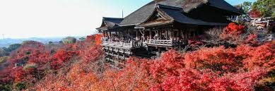
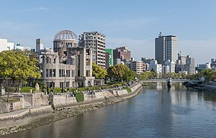
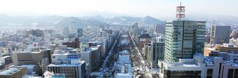

A magnificent country to visit for every reason imaginable, Japan is a tourism hub, known for its historic landmarks, natural wonders, cities, entertainment venues and beautiful mix of futuristic technology and attunation with nature
However Japan is a vast country, which city should we visit first? Let us explore our top five Japanese cities together!
Japanese cities
Below is our ordered list of cities to visit. You can explore each city indepth by clicking the links!
- Tokyo
- Kyoto 
- Osaka
- Hiroshima 
- Sapporo 

Immerse yourself in the vibrant pulse of Tokyo, where cutting-edge technology meets the heart of pop culture. Marvel at the dazzling neon-lit streets of Akihabara, the mecca for tech enthusiasts and anime fans, and explore futuristic attractions like the TeamLab Borderless digital art museum. From robot restaurants to the latest in gaming innovations, Tokyo is the ultimate destination for those seeking a thrilling fusion of modern marvels and cultural wonders.
Discover the serene beauty of Kyoto, where ancient temples and tranquil gardens offer a peaceful retreat from the modern world. Wander through the breathtaking Arashiyama Bamboo Grove, marvel at the seasonal splendor of cherry blossoms in Maruyama Park, and find tranquility at the Kinkaku-ji's Golden Pavilion reflected in its serene pond. Kyoto's lush landscapes and timeless charm provide the perfect backdrop for a rejuvenating escape into nature's embrace.

Experience the culinary delights and laid-back charm of Osaka , Japan's vibrant food capital. Indulge in the mouthwatering flavors of takoyaki and okonomiyaki at bustling street stalls, and savor the freshest sushi in the lively Dotonbori district. With its friendly locals and relaxed atmosphere, Osaka invites you to enjoy its delicious cuisine and embrace the city's easygoing vibe.
Explore the profound history and poignant beauty of Hiroshima, a city that stands as a powerful symbol of peace and resilience. Visit the Hiroshima Peace Memorial Park and Museum to reflect on the events of 1945 and pay tribute to the lives affected by the atomic bomb. Stroll through the serene Hiroshima Castle and Shukkei-en Garden, where history and natural beauty combine to offer a deeply moving and unforgettable experience.
Indulge in the culinary and cultural delights of Sapporo, renowned for its world-famous ramen, exceptional beer, and spectacular snow festivals. Savor the rich flavors of Sapporo ramen in the bustling Ramen Alley, and tour the Sapporo Beer Museum to taste Japan's finest brews. Each winter, marvel at the stunning ice sculptures and festive atmosphere of the Sapporo Snow Festival, making this city a must-visit for foodies and winter enthusiasts alike.